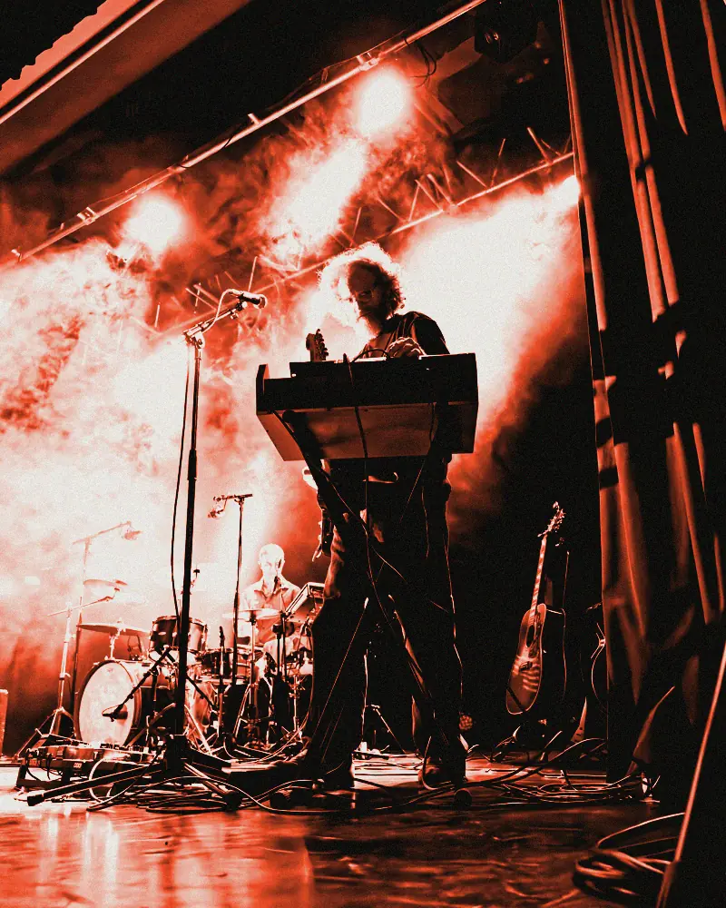
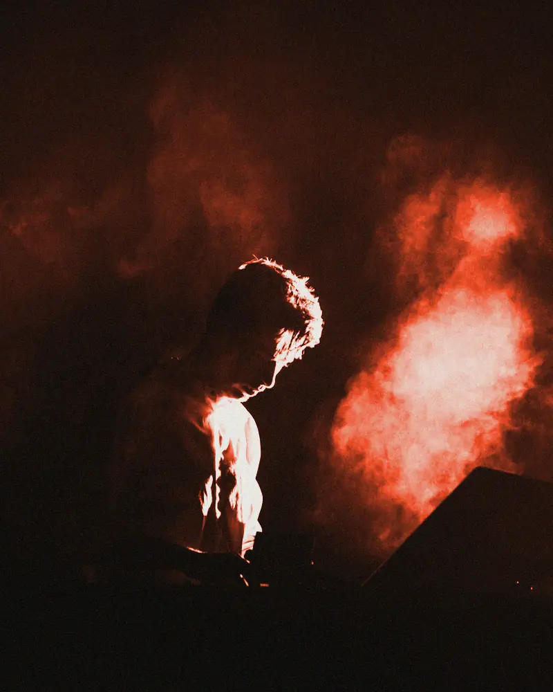
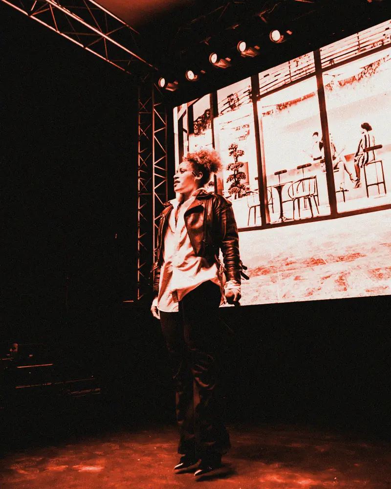
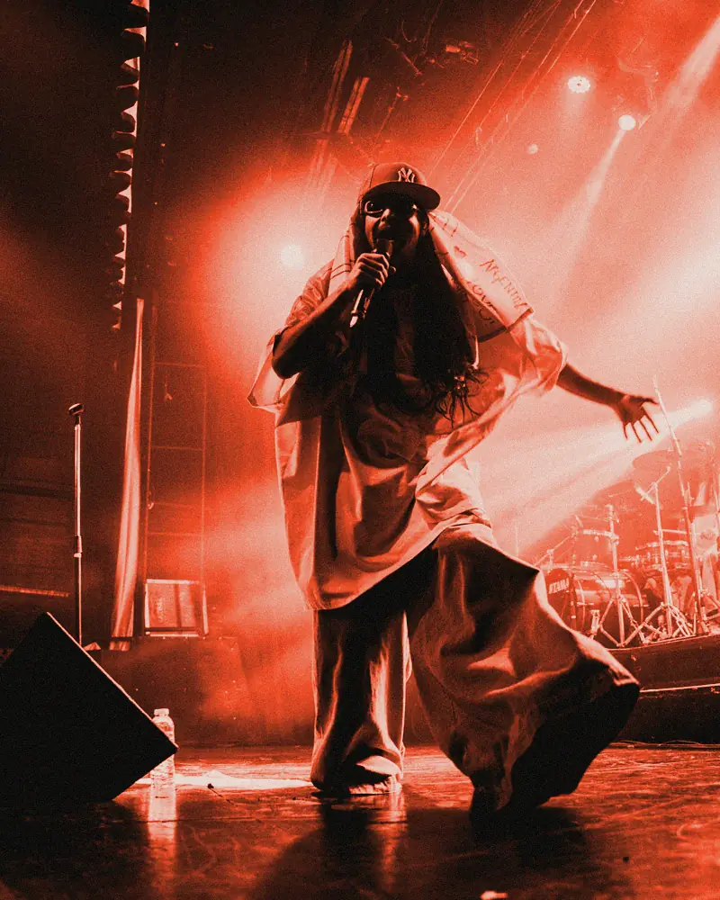
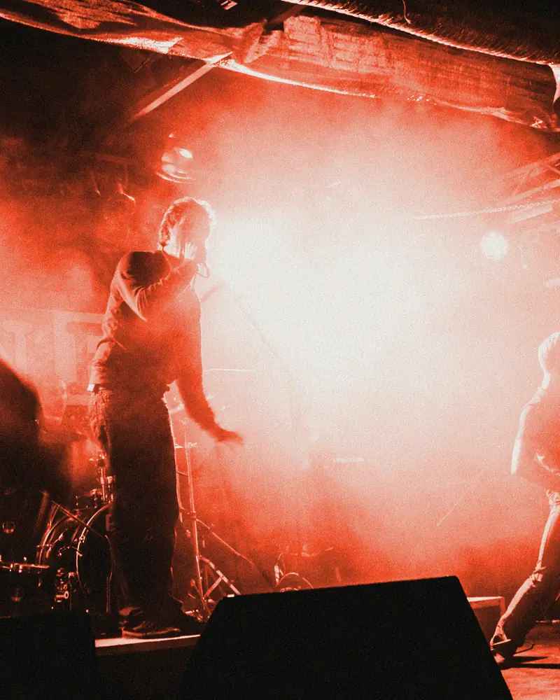

Trois nuits, cinq concerts à ne pas rater
Descendez jusqu'au programme : la molette, le doigt, les flèches gauche et droite ou les boutons font passer d'un artiste à l'autre. Après le dernier, la page reprend son défilement. Démo : festival et artistes fictifs.
Ven 02 · 22:30 · Halle A
Brise-Glace
Rock bruitiste, claviers et guitares.

Nuit du ven. 02 · 01:10 · Halle C
Monique Ferraille
Techno d'atelier, jusqu'au matin.

Sam 03 · 21:50 · Halle A
Les Rivets
Rap punk, en français.

Nuit du sam. 03 · 00:40 · Halle A
Saïda K.
Rap, premier album en mars.

Dim 04 · 22:10 · Halle A
Ondes Courtes
Synthés joués en direct.

Après le programme
La page a repris son défilement normal. En mouvement réduit, ou si GSAP ne se charge pas, les cinq artistes sont simplement les uns sous les autres.